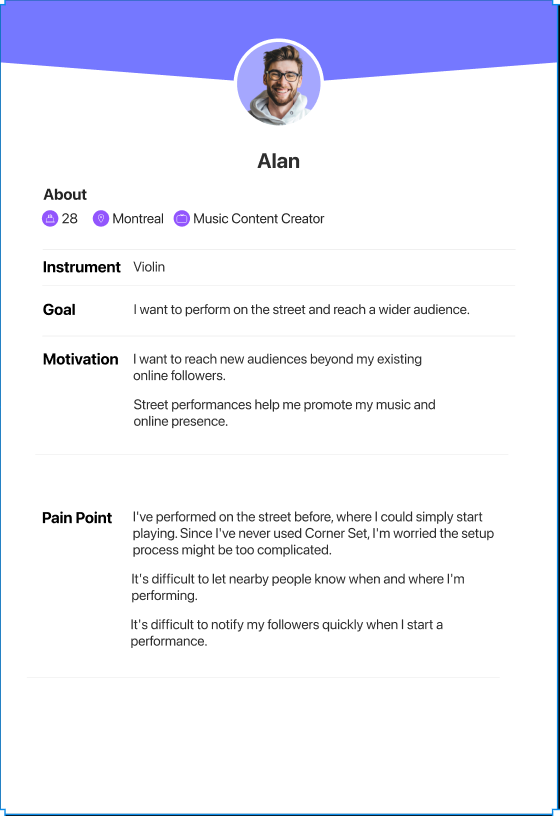
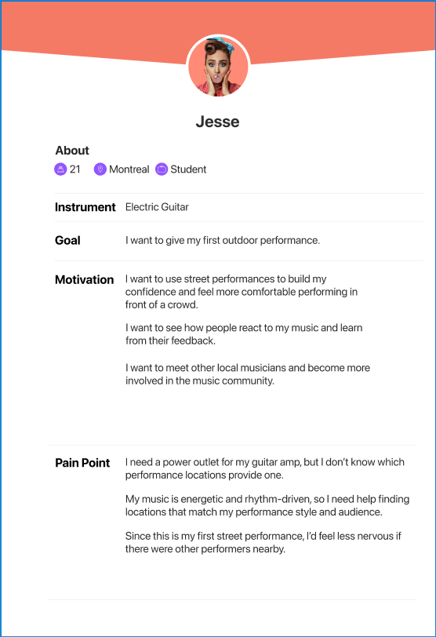
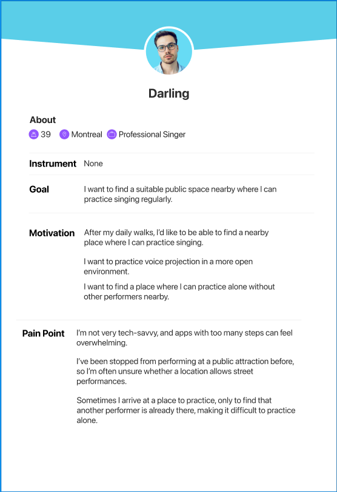
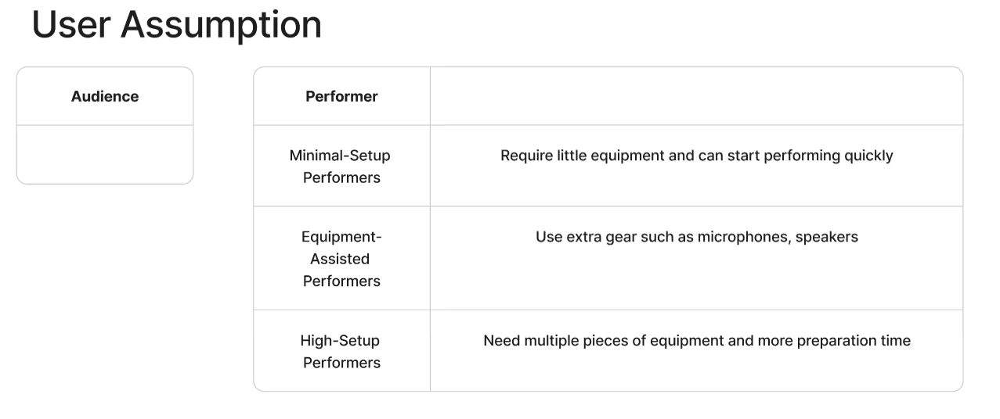
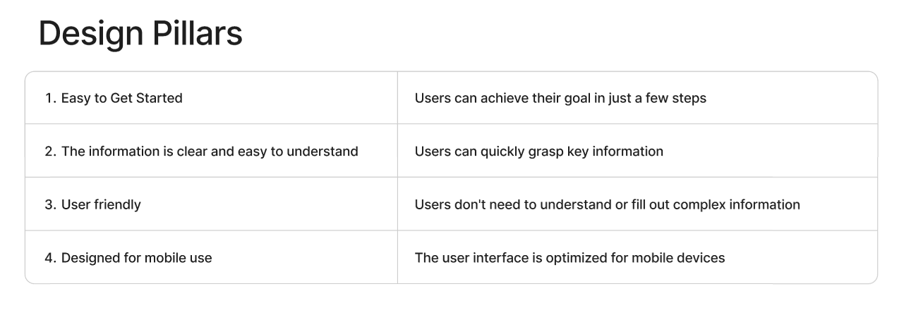
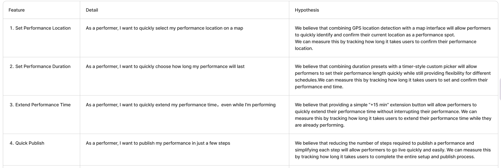
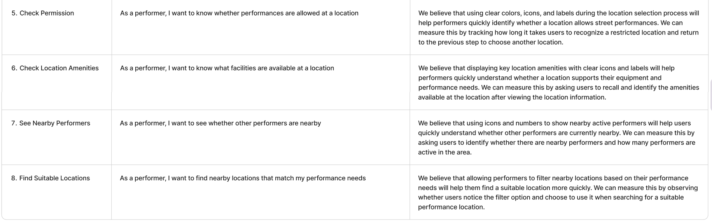
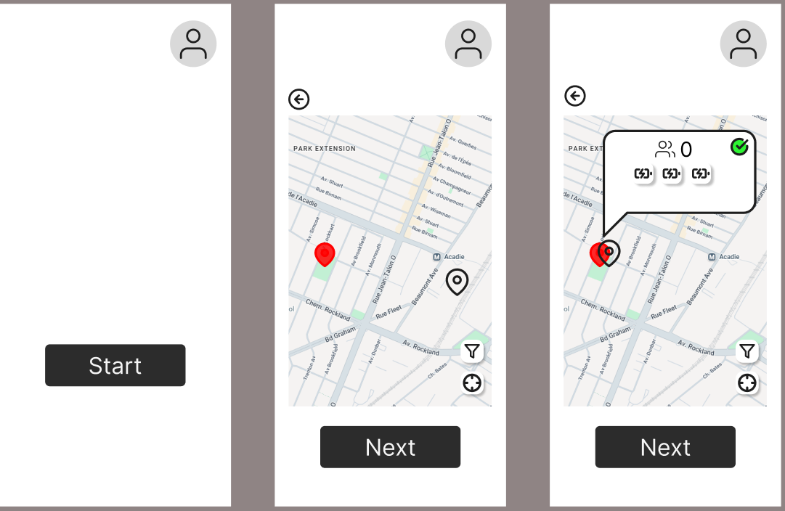
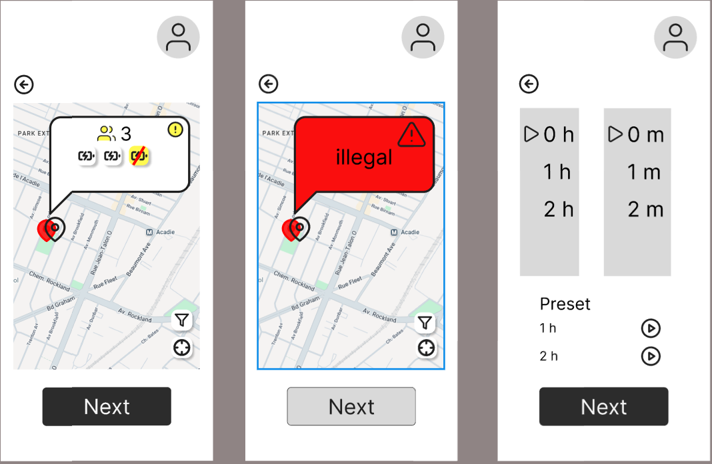
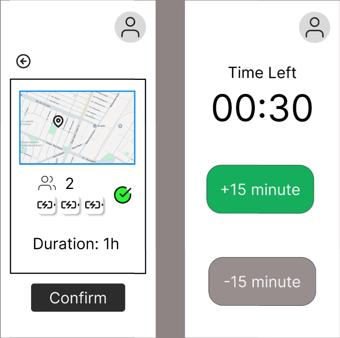

CART 498 · FALL 2026
Design Journal
A documentation of my design process.
Week 1 - Deciding Which Project to Choose
This week, I mainly compared the three proposed projects by looking at their design challenges and how interested I was in each one.
Artivault is more like an information management system. It mainly focuses on information presentation and organization. I think one of the main challenges would be how to structure, layer, and expand a large amount of information without overwhelming the user. Personally, I am not very interested in this project.
CornerSet is more like a mobile app, focusing on information presentation and user interaction. One challenge for me is that I do not have much experience with live music performance, so I may need to better understand the needs and situations of performers.
Bitten focuses on game UI, including information presentation, how players recognize important information, and game fairness. One of the main challenges mentioned in the lecture is that the project may require a large amount of visual asset creation. However, this is the project I am most interested in personally.
After considering both my personal interest and the difficulty of each project, I ultimately decided to choose CornerSet.
Week 2 – Design Pillars, Persona, User Assumptions, Features, and Wireframe
This week, I mainly worked on the Persona and User Assumptions, then used them to define the Design Pillars and List of Features, and finally created a simple Wireframe.
Based on the requirements provided by the fictional users, I decided to focus on performers first and created personas for them. I included their background, goals, motivations, and pain points because I believe these aspects are directly related to my later design decisions.




Based on the personas, I defined the Design Pillars, mainly focusing on ease of use and readability of information. I also created a List of Features based on the users’ pain points and the requirements provided by the fictional users.



Finally, I used these features to create a simple wireframe. The purpose was to test how the information and interactive buttons would fit on a mobile screen, how the layout should be organized, and whether the overall structure was practical.



Ideation & User Flow
Exploring how performers could move through the process of discovering and publishing performance locations.
Initial Ideas
This week I began translating the earlier research into possible interface ideas and user flows.

Key Question
How might we help performers understand whether a location is suitable before publishing their performance?
Reflection
Mapping the process visually made several unnecessary steps easier to identify and helped clarify which information should be available earlier in the flow.
Early Wireframes
Turning the user flow into simple interface structures that can later be tested.
Wireframe
The first wireframes intentionally focus on information hierarchy instead of visual details.

Next Step
The next stage will involve testing whether users understand the location information and whether the publishing process feels clear.